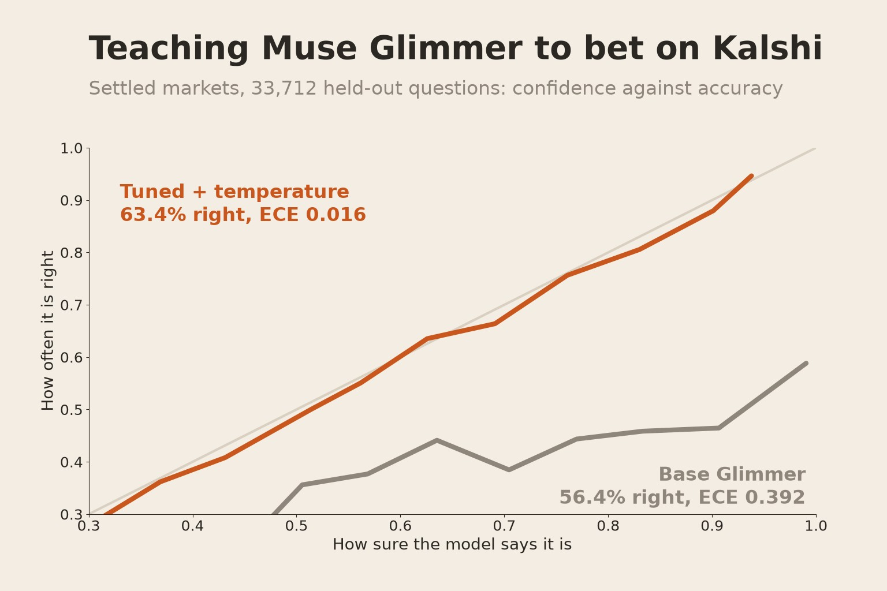
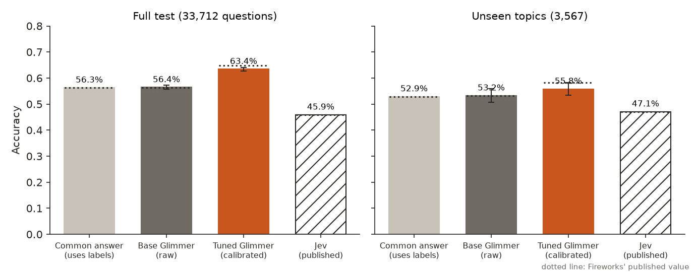
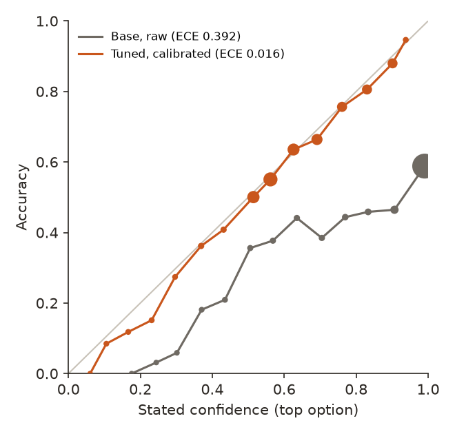
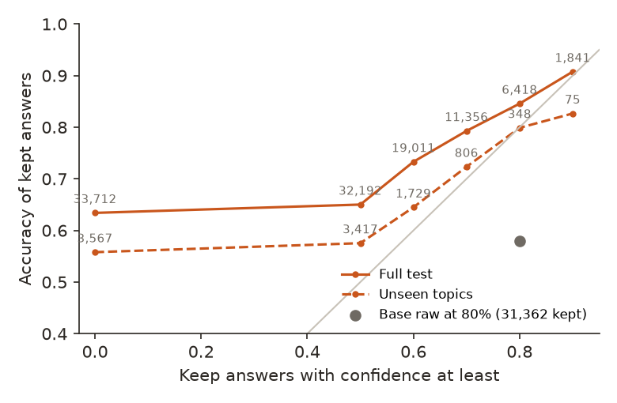
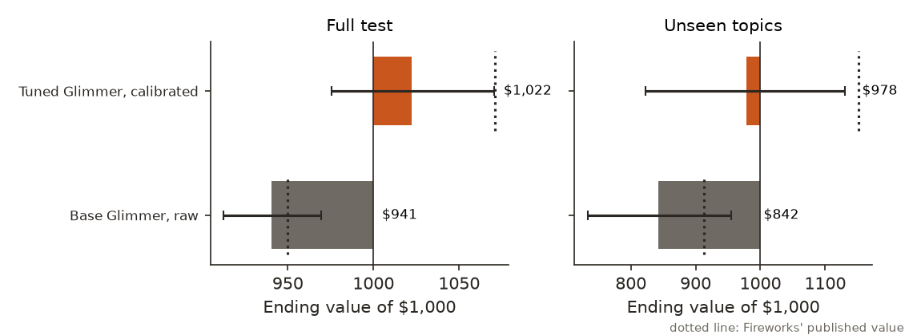
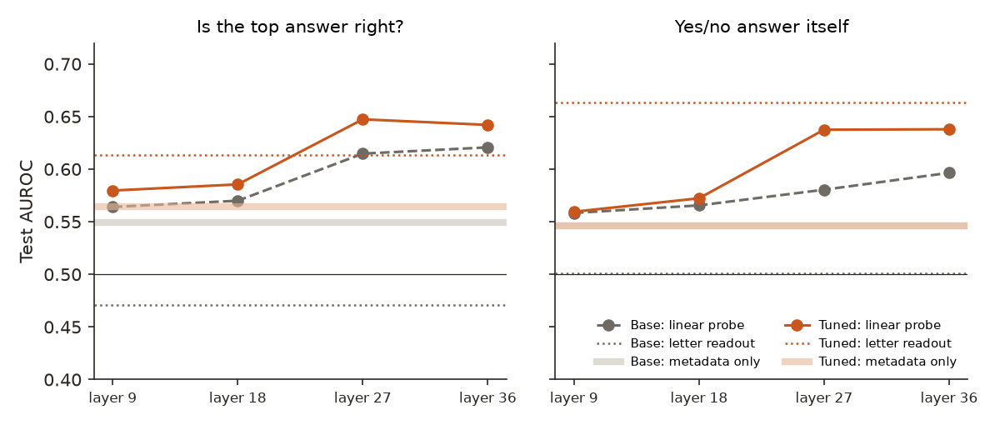

← Research·Experiments·
Teaching Muse Glimmer to bet on Kalshi: the free recipe replicates, and the base model knew more than it said
Fireworks published a recipe that turns its open 30B model into a forecaster for prediction markets: one cheap fine-tune on settled Kalshi questions, then a temperature. This note reruns it from the public code and data while the training is free, checks every reported number, and then asks a question the recipe leaves open: when the untuned model is badly overconfident, is the right answer missing inside it, or only missing from what it says?

Summary: the short answer and the key results
In short
Does Fireworks' free Kalshi recipe for Muse Glimmer do what it says, and what does its temperature actually fix?
It replicates. Run unchanged from the public code and data, one LoRA pass over 20,051 settled-market questions lifts Muse Glimmer from 56.4% to 63.4% on 33,712 later questions (Fireworks reported 64.8%), and the dev-fitted temperature brings its calibration error from 0.392 to 0.016. Answers it gives at 80% confidence or more are right 84.6% of the time (Fireworks: 86.8%). The gain shrinks to 2.6 points on 113 topic families it never trained on. The fee-aware paper backtest is weaker than published: $1,000 ends at $1,022 [976, 1,071] for the tuned model against $941 for the base model (Fireworks: $1,071 and $950), so our interval does not rule out breaking even. The twist, on Qwen3-8B with the same recipe: the base model's letter readout ranks its own answers worse than chance (AUROC 0.47 for “is this answer right?”), while a linear probe on its activations reads the same thing at 0.62. A temperature cannot repair that, because it only rescales the readout; fine-tuning moved the readout to 0.61 and the probe only to 0.65. The base model's overconfidence was in what it said, not in what it held.
Key results
| What we tested | Result | Compared with |
|---|---|---|
| Does the recipe beat the base model on held-out markets? (33,712 test questions, events opened from April 2026) | Yes, by 7.0 points [6.2, 7.8]: tuned and calibrated 63.4% [62.7, 64.1] | Base Glimmer 56.4% [55.7, 57.2]; Fireworks reported 64.8% and 56.4% |
| Is the tuned model calibrated? | Yes. ECE 0.016, Brier sum 0.441; at 80% confidence or more, 6,418 answers kept, 84.6% right | Base: ECE 0.392, and 31,362 answers above 80% are right 57.9% of the time. Fireworks: 0.022, 0.432, 4,868 at 86.8% |
| Does it hold on topics it never saw? (3,567 questions, 113 families) | Partly: +2.6 points [0.3, 4.8], 55.8% against 53.2% | Fireworks reported 58.3% against 53.2%; always answering the common answer scores 52.9% |
| Does it make money in the cookbook's paper backtest? ($1,000, fees modelled) | Barely: $1,000 ends at $1,022 [976, 1,071], 90% interval; on unseen topics $978 [823, 1,131] | Base Glimmer $941 [913, 970]. Fireworks: tuned $1,071 [1,016, 1,124], base $950; 14,985 quote-eligible contracts here, 15,230 there |
| Twist (Qwen3-8B, exploratory): does the base model hold confidence its readout does not show? | Yes. A probe reads “is the top answer right?” at AUROC 0.62 [0.61, 0.63] where the readout scores 0.47 [0.46, 0.48]; on yes/no answers 0.60 against 0.50 | Question metadata alone: 0.55. The temperature leaves the readout at 0.48 (it cannot change a ranking) |
| Twist: what did fine-tuning change? | Mostly the readout. Readout 0.47 to 0.61 (+0.14); probe 0.62 to 0.65 (+0.03). After training, the readout beats the probe on the yes/no answer (0.66 against 0.64) | Same probe recipe, same 6,232 calibration questions |
01Introduction
On April 23, 2026, Kalshi listed a market on whether Logan Webb would record 3 or more strikeouts against the Dodgers that afternoon. Base Muse Glimmer, shown only the market's wording and date, gave “yes” a 0.06% chance. It answers “no” to 98.9% of all yes/no questions in the test, almost always at more than 99% confidence, which makes its 56.4% accuracy the same as always saying no. After one fine-tuning pass on older settled markets and a temperature fitted on a few thousand more, the same model gave Webb's strikeouts 80%. He got them. Across the test, when the tuned model says 80% or more, it is right 85% of the time.
What is known. Fireworks published this recipe with the data and code: settled Kalshi markets turned into multiple-choice and yes/no questions (title, rules and opening date only, no prices or news), split by time, used to train Muse Glimmer 30B with a K-way cross-entropy on the option letters, then calibrated with one temperature per question type. They report 64.8% against 56.4% for the base model and 45.9% for Jev, a hosted decision model, and a paper allocation that turns $1,000 into $1,071 after fees. Temperature scaling as a fix for overconfident classifiers is standard (Guo et al., 2017), and language models are known to carry information about whether they are right that a probe can read (Kadavath et al., 2022).
What is missing. An outside rerun of the published numbers, and an answer to what the temperature is fixing. Base Glimmer's raw confidence is nearly useless. If the model held no signal about which answers are right, no rescaling could help and fine-tuning would have to create it. If it holds the signal but its letter logits do not express it, the fix belongs at the readout.
Run unchanged, does the free recipe reproduce Fireworks' accuracy, calibration and paper profit on the same held-out markets? And in an open model trained the same way, is confidence readable from the activations before training, and does a temperature fix that signal or only its readout?
What this note does. Its contributions:
- An independent replication of the published recipe on the same 33,712 test questions, with every reported metric recomputed from per-question readouts, for $0.
- A fee-aware backtest rebuilt from Kalshi's public API (the cookbook ships none), with the contract mapping checked against Kalshi's own settlements.
- An exploratory interpretability result on Qwen3-8B: the base model's readout ranks its answers backwards while its activations do not; a temperature cannot fix a ranking, fine-tuning can.
- The code, readouts, contract map and quotes, so each number can be rerun without the training.
What would count as an answer. Written down before training (PREREGISTRATION.md):
- Training works: tuned and calibrated accuracy beats raw base accuracy by at least 5 points, with the 95% event-bootstrap interval of the difference above zero.
- Magnitude: tuned within 3 points of 64.8%, base within 3 points of 56.4%.
- Calibration: tuned ECE below 0.05, and answers at 80% confidence or more right at least 80% of the time.
- Generalisation: on the unseen-topic slice, tuned beats base.
- Money (the weakest test): the tuned paper allocation ends above $1,000 and above base's.
02Setup
2.1 Decision tuning, for software engineers
- A decision model answers with a letter, not text. The prompt lists the options as A), B), C)…; the model's next-token probabilities for just those letters, renormalised, are its forecast. No answer is generated; one forward pass reads it. A yes/no question is A) yes, B) no.
- K-way cross-entropy trains exactly that readout: the loss is the negative log of the probability on the right letter, normalised over the question's K letters only. Like a softmax classifier head that reuses the model's own vocabulary.
- LoRA trains a small add-on (here rank 64) instead of all 30 billion weights; the base model stays one switch away.
- Temperature divides every logit by one number T before the softmax. T above 1 flattens overconfident forecasts, below 1 sharpens them. It never changes which option is on top, so accuracy is unchanged; and within one question type it never changes which answers are more confident than which. It is fitted on held-out data by minimising log loss.
- Calibration: of the answers given at 70% confidence, about 70% should be right. ECE (expected calibration error) is the average gap between stated confidence and accuracy, over 15 equal-width bins, weighted by how many answers fall in each.
- AUROC (for confidence): pick a right answer and a wrong one at random; AUROC is how often the right one got the higher confidence. 0.5 is a coin flip; below 0.5 is backwards.
- A linear probe is a logistic regression on the model's hidden state at the answer position, trained to predict a label (here: is the top answer right; or, for yes/no, is the answer yes). If a probe can read it, the information is in the activations whether or not the output uses it.
2.2 Data: one test set, split by time
The dataset is Fireworks' public upload, byte for byte (SHA-256 checked against the cookbook's pins). One row is one Kalshi event: the state (title, category, rules, opening date) and its questions. Mutually exclusive outcomes form one choice question; other contracts become up to eight yes/no questions. Events settled before January 4, 2026 train; events opened January 11 to before April 1 calibrate; events opened April 8 or later test, after Glimmer's stated knowledge cutoff. The unseen-topic slice is the last 765 test events: 113 topic families kept out of training and calibration.
| Split | Window | Events | Questions | Used for |
|---|---|---|---|---|
| Training | settled before Jan 4, 2026 | 6,461 | 20,051 | The LoRA pass |
| Calibration (dev) | opened Jan 11, settled before Apr 1 | 2,000 | 6,232 | The temperature fit; the twist's probes |
| Test | opened Apr 8, 2026 or later | 8,765 | 33,712 | Every reported number |
| of which unseen topics | 113 held-out families | 765 | 3,567 | Generalisation |
91% of test questions are yes/no (30,680), and “no” is the answer 58% of the time; always answering “no”, and the most common option position on choice questions, scores 56.3%. That reference uses the test labels, so it is descriptive only, but it is the bar a forecaster must clear. Base Glimmer, at 56.4%, does not.
2.3 Recipe and models
The cookbook's training.recipes.decision_loop, unchanged: serverless Muse Glimmer 30B on Fireworks, LoRA rank 64 and alpha 32, Adam at learning rate 1e-4, batch 64 events, one epoch (101 steps), seed 0, K-way loss over option-letter tokens, per-type temperatures fitted on dev and saved into the final checkpoint. Our wrapper, fw_train.py, hooks the recipe's step-0 and final evaluations to also read every dev and test question's option log-probabilities on the same trainer, for the base and the tuned model. That is the whole evaluation: no inference endpoint, no deployment, and so no inference bill. Fireworks' published base readout used offline BF16 evaluation and the tuned one BF16 serving; ours reads both on the trainer.
For the twist, the same recipe on Qwen3-8B (modal_qwen.py, one Modal H100): the cookbook's prompt text and option order, thinking off, LoRA rank 64 / alpha 32 on all linear layers, AdamW at 1e-4, batch 64 events, one epoch, seed 0. Its readouts also save the residual-stream activation at the answer position at layers 9, 18, 27 and 36 of 36.
03How the study was run
- Pre-registration of metrics and pass criteria, after a 32-row smoke run and before any test number was read.
- A throughput check: on the shared serverless pool each forward call waited about 50 s whatever its size, so the readout batch went from 64 to 1,024 questions per call (the numbers do not depend on it).
- The run: base readout of dev (6,232) and test (33,712); 101 training steps; tuned readout of dev and test; the recipe's calibration pass and calibrated checkpoint. About 4 hours, all on Fireworks' free serverless training.
- Scoring (evaluate.py): per-type temperatures refitted on our dev readout with the cookbook's search, then accuracy, Brier, ECE, the confidence curve and event-bootstrap intervals (2,000 draws).
- The backtest data: series titles matched to Kalshi series tickers (3,040), their settled events fetched (357,321), archived markets filled from Kalshi's historical endpoint, then 44,465 of 44,962 test contracts mapped to a market ticker; the dataset's label agrees with Kalshi's settlement on all 44,465. Then the last hourly candle at or before open + 2 h for each.
- The backtest (backtest.py), with the cookbook's rule as written.
- The twist: Qwen3-8B base readout with activations, training, tuned readout (Modal H100, about 45 minutes); probes fitted on dev and scored on test on a Modal CPU container; a metadata-only baseline and event-bootstrap intervals afterwards.
| Fixed before any test number | Changed or added after reading results |
|---|---|
| The recipe and its hyperparameters (the cookbook's defaults); data and splits; base at T = 1, tuned with dev-fitted per-type T | Readout batch 64 to 1,024 questions per call (speed only) |
| Metrics: accuracy, Brier sum, 15-bin ECE, the confidence curve, the common-answer reference; event-bootstrap intervals | Kalshi archive fallback for markets and candles, and a request throttle, after the first fetches returned empty markets and 429s |
| The five pass criteria; the backtest rule; the twist's three hypotheses (labelled exploratory) | The twist's metadata-only baseline and its bootstrap intervals, added after the first probe table; probes moved from the laptop to a Modal CPU container |
Conditions: Fireworks serverless training (GB300 pool), BF16, readouts on the trainer; Qwen3-8B in BF16 on one H100, greedy readout of letter logits (no sampling anywhere). Wall time: about 4 hours on Fireworks, 45 minutes of H100, about 3 hours of quote fetching at Kalshi's rate limit.
04Results
4.1 The accuracy gain replicates, about 1.4 points short of the published number
The tuned model answers 63.4% [62.7, 64.1] of the 33,712 test questions correctly, 7.0 points [6.2, 7.8] above the base model's 56.4% (Figure 1). Fireworks reported 64.8% and 56.4%. Our base number matches theirs to the decimal (and its Brier sum, 0.8075 against 0.8071, and ECE, 0.392 against 0.392), which says the data, prompt rendering and readout are the same. The tuned model lands 1.4 points under theirs, inside the 3-point bar; the run is one seed on a shared pool, and Fireworks' tuned readout came from a serving stack, ours from the trainer.

Where the gain comes from: yes/no accuracy goes from 58.4% to 65.3% (30,680 questions), choice accuracy from 36.8% to 44.0% (3,032). Base Glimmer's yes/no score is exactly what always answering “no” scores (58.4%): it says “no” to 98.9% of them. The tuned model is 6.9 points above that, so it learned more than the base rate.
Unseen topics: smaller, and below the published number. On the 113 held-out families the gain is 2.6 points [0.3, 4.8] (55.8% against 53.2%); Fireworks reported 58.3%. The interval clears zero, so the pre-registered test passes, but most of the full-test gain is on topic families the model trained on. On this slice the tuned model is 2.9 points above the common-answer reference (52.9%).
4.2 The temperature does its job: ECE 0.392 to 0.016
Figure 2 shows the change the cover leads with. Base Glimmer puts more than 99% on its top option for 29,102 of 33,712 questions (86%) and is right on 58.8% of them; its ECE is 0.392. After training the raw model is already far better (ECE 0.055), and the dev-fitted temperatures (choice 0.99, yes/no 1.44; Fireworks: 0.91 and 1.38) bring it to 0.016, against Fireworks' 0.022. The Brier sum falls from 0.808 to 0.441 (Fireworks: 0.432).

The same temperature fit on the base model is no fix: the search runs into its upper bound (T = 4, the cookbook's limit) for both question types and leaves ECE at 0.193. Fireworks makes the same point: “the earlier claim that base Glimmer never reaches 80% was an artifact of applying posthoc calibration to that comparator.” Section 4.5 shows, in an open model, why a temperature cannot be enough.
4.3 Confident answers are right as often as they claim
Keeping only answers at 80% confidence or more leaves 6,418 questions, 84.6% right (Figure 3; Fireworks: 4,868 at 86.8%); at 90% or more, 1,841 at 90.8%. On the unseen slice the 80% filter keeps 348 at 79.9%, just under the bar (Fireworks: 219 at 86.8%). The pre-registered criterion (full test, 80% or more right at 80% confidence) passes. Fireworks' caveat applies here too: many confident calls are “no” on neighbouring threshold rungs of one event (more than 1.5 goals, more than 2.5 goals…), so they are not independent successes.

4.4 The paper profit shrinks: $1,022 instead of $1,071, and the interval includes breaking even
Under the cookbook's rule, the tuned model bets on 4,150 contracts in 2,189 events and turns $1,000 into $1,022 [976, 1,071] (90% event-bootstrap interval); the base model bets on 10,895 contracts in 3,728 events and ends at $941 [913, 970] (Figure 4). Fireworks reported $1,071 [1,016, 1,124] and $950. Both of our point estimates pass the pre-registered test (above $1,000, above base), but our tuned interval reaches below $1,000 where theirs did not. On the unseen topics both lose money, the tuned model less: $978 [823, 1,131] against $842 for base (Fireworks: $1,152 and $913).

How close the plumbing is: our quote extraction finds 14,985 eligible contracts (a two-sided book, spread at most 10 cents, at the last hourly candle before open + 2 h) against Fireworks' 15,230, and the base model's bets match theirs almost exactly (3,728 events and 10,895 bets against 3,732 and 10,832; $941 against $950). So the backtest machinery agrees and the gap is in the tuned model: its accuracy is 1.4 points lower, and it is a little less selective (2,189 events against 2,059). A small edge on thousands of near-coin-flip bets is fragile; a 1.4-point accuracy difference is enough to halve the profit. The temperature adds a little: the raw tuned model ends at $1,012, the calibrated one at $1,022; the base model with a temperature does worse than without one ($922).
4.5 Exploratory: the base model knew which answers were right; its readout said the opposite
Muse Glimmer's activations are not exposed by the serverless trainer, so the question moves to Qwen3-8B trained with the same recipe. The recipe works less well there: tuned Qwen3-8B scores 57.1% [56.3, 57.8], 12.3 points above its base model's 44.7% but only 0.8 above the common-answer reference, and 50.8% on unseen topics. Base Qwen3-8B is even more overconfident than base Glimmer (ECE 0.510; the temperature again hits its bound and leaves 0.384).
Two targets, each predicted on the 33,712 test questions by a linear probe fitted on the 6,232 dev questions (Figure 5):
- Is the model's top answer right? The base model's own confidence, its top-option probability, ranks right answers below wrong ones: AUROC 0.471 [0.462, 0.479]. A probe on the layer-36 activation reads the same question at 0.621 [0.612, 0.629], 0.15 higher [0.14, 0.16]. Question metadata alone (category, type, option count, event size, length) reaches 0.550, so the probe reads more than what kind of question it is.
- On yes/no questions, is the answer yes? The base readout's P(yes) is at chance (AUROC 0.501); the probe reads 0.596 [0.587, 0.606], against 0.546 for metadata.

Against the pre-registered hypotheses:
- H1, readable: supported. Before any training the activations carry which answers are right, at AUROC 0.62, while the letter readout carries it backwards.
- H2, the temperature is readout-only: supported, by construction and in the numbers. Dividing logits by T leaves the readout's AUROC at 0.478 (it only reorders across the two question types). A temperature cannot turn a backwards ranking into a forwards one; it can only pull every answer toward 50%, which is what T = 4 does. Fine-tuning moved the readout from 0.47 to 0.61 (+0.14) and the best probe from 0.62 to 0.65 (+0.03). The training mostly connected a signal that was already there to the output, and sharpened it a little.
- H3, overconfidence lives in the readout: supported for the base model. The base probe, fitted with logistic loss, is calibrated on test (ECE 0.055) where the base readout is not (0.510). After training the readout overtakes the probe on the yes/no answer itself (0.663 against 0.638, a difference of 0.025 [0.018, 0.032]), likely because it was trained on 20,051 questions and the probe on 6,232.
The boring explanations we checked: a probe reading only question type or topic (the metadata baseline is 0.05 to 0.07 lower on both targets); test leakage (probes fit on January to March events, scored on April onward); a probe exploiting the label imbalance (AUROC ignores base rates). What we did not check: whether the probe direction is used (no steering or ablation), and whether the same holds in Glimmer.
4.6 Against the published claims
| Published claim (Fireworks) | Ours | Pre-registered test |
|---|---|---|
| Tuned 64.8%, base 56.4% on the full test | 63.4%, 56.4% | ✓ +7.0 [6.2, 7.8] ≥ 5; both within 3 points |
| ECE 0.0216, Brier 0.4318 (tuned, calibrated) | 0.0156, 0.4414 | ✓ ECE below 0.05 |
| 80% or more confident: 4,868 kept, 86.8% right | 6,418, 84.6% | ✓ at least 80% |
| Unseen topics: 58.3% against 53.2% | 55.8% against 53.2% | ✓ tuned beats base (+2.6 [0.3, 4.8]); 2.5 points under the published value |
| $1,000 to $1,071 (+1.6% to +12.4%); base $950 | $1,022 [976, 1,071]; base $941 | ✓ above $1,000 and above base (point estimates, as pre-registered); its 90% interval includes $1,000, unlike Fireworks' |
| Jev 45.9%, ECE 0.159 | not run | No access to Jev's API; published numbers shown only |
05Implications for AI safety
A model's stated confidence is often what a human or an automated overseer acts on: defer when unsure, escalate when confident and wrong. This replication shows how cheaply the stated number can be repaired for one task (one LoRA pass and two temperatures), and the twist shows why the cheap repair has a precondition. In base Qwen3-8B, the letter readout's confidence was not just too high, it pointed the wrong way, while the activations held a forward-pointing signal. A temperature cannot fix that kind of error; a monitor that only rescales outputs would have certified a model whose confidence ranks its answers backwards. Calibration metrics alone (ECE) would also have hidden it: a temperature can bring ECE down without making confidence any more informative.
Before trusting a recalibrated confidence for oversight, check that it ranks right answers above wrong ones (AUROC), not only that its average matches (ECE), and compare it with a probe on the model's activations.
06What this does not show
- One training run, one seed, as Fireworks' was. The 1.4-point gap to the published accuracy is within what a different pool, readout stack or seed could produce, but we cannot separate those.
- Correlated questions. Up to eight yes/no questions share one event and often one answer pattern (threshold ladders). Intervals resample whole events; they do not cover correlations across events in one series.
- The backtest is static and historical: fractional contracts, no depth or slippage, a fee rule rounded on a 100-contract reference order, and our own quote extraction (a different candle choice or mapping would change it). It is paper only, not evidence of live trading performance.
- No Jev. We had no API access; its numbers are Fireworks'.
- The twist is on a different, weaker model. Tuned Qwen3-8B barely beats the common answer; whether Glimmer's activations show the same split between signal and readout is untested. The probes are correlational: we did not steer or ablate along them.
- Inputs have no prices or news, by design of the dataset. The model forecasts from the market's wording and date alone; a live forecaster would see more, and the market price would be a far stronger baseline than the common answer.
07Reproduce it
reproduce.sh lists every command (--dry-run prints them). The training needs a Fireworks key (free on Muse Glimmer until November 30, 2026) and the cookbook installed; everything after the readouts runs from the shipped files:
python experiments/glimmer-kalshi/evaluate.py # accuracy, ECE, curves from readouts/
python experiments/glimmer-kalshi/backtest.py run # from kalshi/map.jsonl and kalshi/quotes.jsonl
python experiments/glimmer-kalshi/evaluate.py --dir qwen --out qwen_
python experiments/glimmer-kalshi/qwen_stats.py # probe vs readout intervals
python experiments/glimmer-kalshi/make_figures.py08What's next
- Read the readout gap causally: steer base Qwen3-8B along the correctness probe and see whether the letter readout's ranking follows.
- Calibrate from the inside: use the probe as the confidence for the base model, and compare its selective accuracy with the fine-tuned readout's.
- Add the market price at entry as an input or a baseline: the honest bar for a forecaster.
- Seeds and the unseen slice: two more training seeds would show whether the unseen-topic gap to the published number is noise.
09Questions and answers
Was this really free?
Yes, on Fireworks. Serverless training on Muse Glimmer is free until November 30, 2026, and every evaluation number was read on the training job itself, so there was no inference endpoint or deployment to pay for. The account's billing usage shows only serverless training tokens and a monthly spend of $0. The Qwen3-8B twist cost $3.04 on Modal (one H100 for about 40 minutes, plus CPU for the probes).
Why can't a temperature fix the base model?
Because the base model's confidence is not just too high; it is uninformative or backwards about which of its answers are right (AUROC 0.47 in Qwen3-8B). A temperature only stretches or squeezes confidence; the most it can do with an uninformative score is flatten it toward 50%, which is what the fit did (it hit T = 4).
Why is Jev not rerun?
Jev is a hosted model behind its maker's API, and we had no access. Its numbers in the figures are Fireworks' published ones, marked as such.
Does it generalise to new topics?
A little: +2.6 points [0.3, 4.8] on 113 topic families it never saw, against +7.0 overall. Most of the gain is on kinds of markets it trained on.
AAppendix: data
Data files
Column-by-column descriptions are in README.md.
readouts/{base,tuned}_{dev,test}.jsonl(for example tuned_test.jsonl): per question, the option-letter log-probabilities read on the Fireworks trainer.results/metrics.json,results/test_probs.jsonl: every accuracy, calibration and curve number; per-question probabilities.kalshi/map.jsonl,kalshi/quotes.jsonl,results/backtest.json: the contract map, quotes and backtest.qwen/(for example base_test.jsonl),results/qwen_probe.json,results/qwen_stats.json,results/qwen_meta_baseline.json: the twist.
How to cite
@misc{lie2026glimmerkalshi,
author = {Albert Lie},
title = {Teaching Muse Glimmer to bet on Kalshi: the free recipe replicates, and the base model knew more than it said},
year = {2026},
month = nov,
note = {steerlab research note},
url = {https://albertlieyingadrian.github.io/steerlab/experiments/glimmer-kalshi/report/}
}